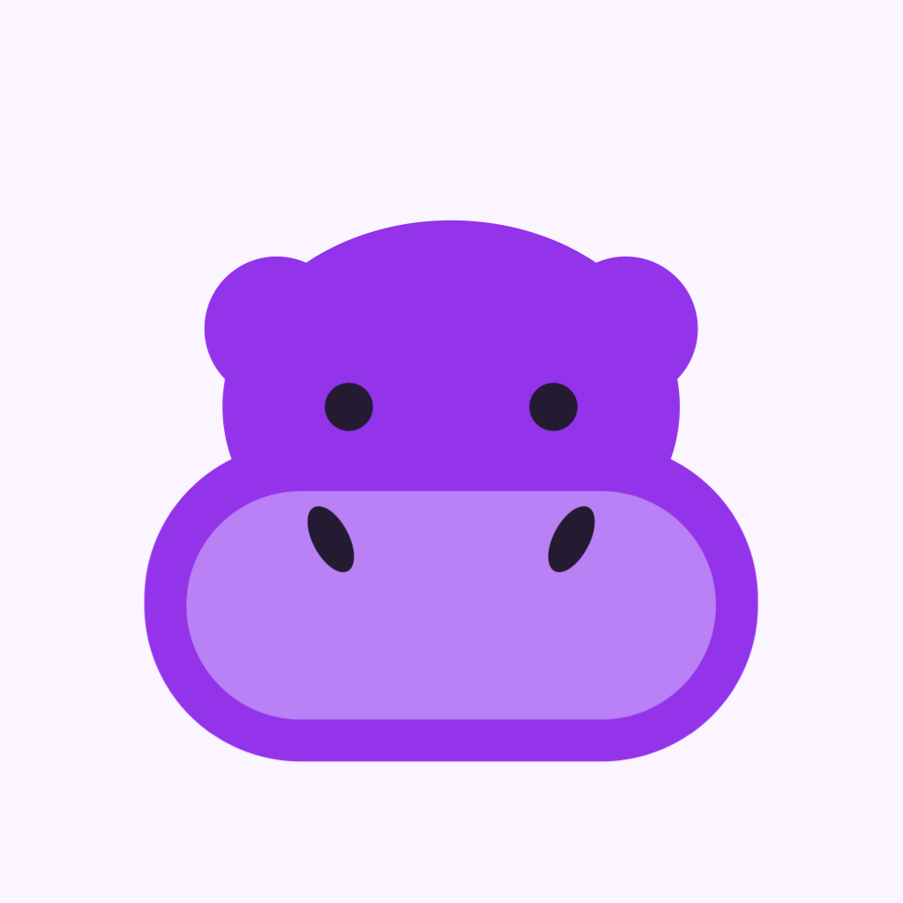

Olvivlo
A tiny purple hippo with wings, loose in a 90s house, school, office and more. One minute on the clock. Grab every star, fly solo or online, and hit back.
Fly through a suburban house, a school, an office, a fire station and a police station. Each building is generated fresh, with stars to collect, powerups to grab and people trying to swat you out of the air. Blow bubbles back, dodge and keep your chain going.
Multiplayer: online or against bots
Play solo, compete with other players online, or take on computer-controlled hippos. Multiplayer looks for other players and fills empty places with bots so you can get a match going. Online matches need an internet connection; bot matches can be played offline.
Daily Challenge
One level, one layout, the same for everyone, new every day. Take your free daily run and compare your score on the Daily leaderboard with optional Game Center sign-in. Extra Daily Plays are available as an optional in-app purchase.
More ways to fly
Race along a line of stars, or collect clocks to see how long you can keep flying. Magnets, multipliers, bubble buddies, warps, invincibility and more help you chase a better score.
In development for iPhone and iPad. Free to play with optional in-app purchases. Online multiplayer is being prepared for launch. Ads are disabled.